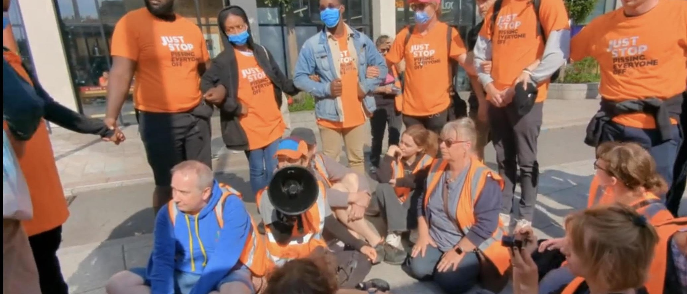

‘Just Stop Oil’ Protesters Blocked By ‘Just Stop Pissing Everyone Off’Just Stop Oil demonstrators in England were met with a counterprotest when a group of citizens wearing t-shirts saying “Just Stop Pissing Everyone Off” encircled the protesters in South London. 🚨 BREAKING: Just Stop Oil Met With Counterprotest 🦺 Supporters of Just Stop Oil were met with a counterprotest while preparing to slow march in Elephant & Castle, but after explaining their reasoning for demanding an end to new oil and gas, the counterprotesters dispersed. pic.twitter.com/iC4Tm5cLeg — Just Stop Oil (@JustStop_Oil) July 20, 2023 As Just Stop Oil protesters were sitting on a sidewalk preparing for a “slow march,” a form of protest in which demonstrators hold up traffic, a group 0f citizens held hands to form a circle around the disruptors, the group said on Twitter. The counter protesters all wore orange t-shirts to match Just Stop Oil’s colors and their “Just Stop Pissing Everyone Off” slogan was written to mimic the Just Stop Oil font. (RELATED: Truck Driver Starts To Run Over Climate Protester Blocking Road) In a brief video posted to Twitter, the seated protestors can be heard making their case to their opposition. One woman even drew applause from the counter protest saying “I’d like to see how long you are willing to stand there, because this is great for us, we’re having conversations and I think it’s been so beneficial this morning being able to meet with some of you lovely people and have these conversations with you, and for us to find out why we’re here and why you’re here, because believe me we are the ordinary people and we have the power. The only thing that needs to happen now is we need to connect the dots and join together.” After some time, Just Stop Pissing Everyone Off left cordially, according to Just Stop Oil, and the slow march proceeded. Just Stop Oil has been increasingly making headlines for disruption for their road blocking and traffic stopping protests. Videos surfacing online often show fed up citizens shoving them out of the road and getting physical. — Clown World ™ 🤡 (@ClownWorld_) July 21, 2023 |
 |